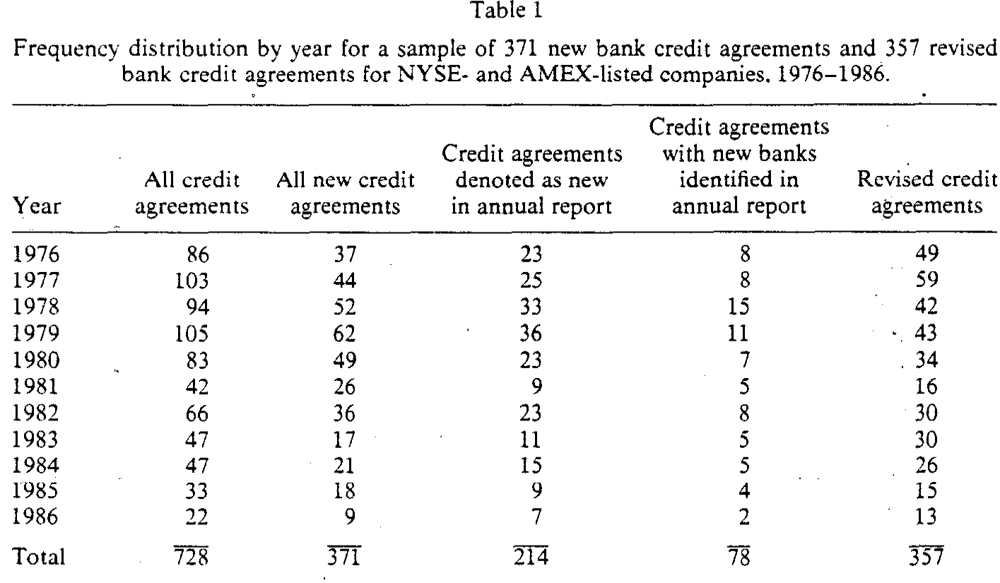
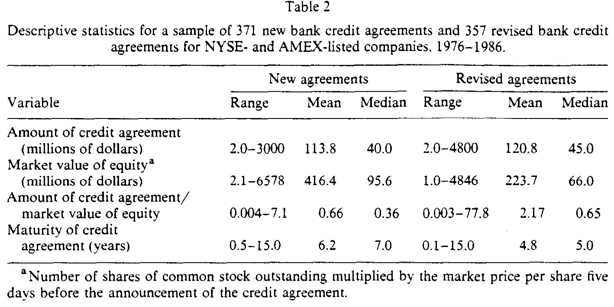
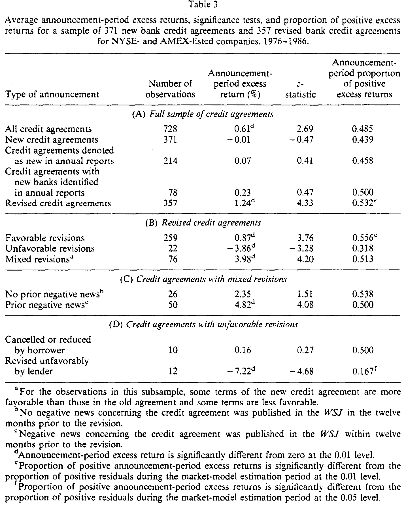
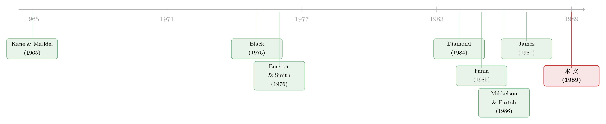

银行的「特别」，不在你借钱那天，而在它续不续约那天
本文读的是 Lummer & McConnell (1989, Journal of Financial Economics)：把银行贷款公告拆成「新贷款」与「老贷款的修订」之后会发现，新贷款的股价反应几乎为零（-0.01%，z = -0.47），真正让市场动容的是续约阶段的修订——利好修订 +0.87%、利空修订 -3.86%。换句话说，银行的「特别」并不诞生在它第一次借钱给你的那一刻，而是诞生在它一次次决定要不要继续借给你的那些时刻。
1 一个被广泛接受、却也许只对了一半的结论
先讲一个 1980 年代财务经济学界几乎已成共识的故事。
银行是「特别」的。当一家公司宣布拿到一笔银行授信，它的股价会上涨——这件事被 James (1987) 用事件研究做实了：在公告前后两天的窗口里，借款公司的超额收益是 +1.93%，显著不为零。Mikkelson & Partch (1986) 在一个跨越 11 年、360 家公司的样本里也找到了类似的证据，银行授信公告对应着 +0.89% 的超额收益。
这个结论之所以让人兴奋，是因为它和别的融资方式形成了鲜明对照。公司增发股票，市场往往报以下跌；发行其他债务，反应也多半是负的或不显著。唯独银行贷款，市场给了正面回应。于是一个优雅的解释被提了出来：银行掌握着别人没有的信息，它愿意放贷这个动作本身，就是在向资本市场释放一个「这家公司值得信赖」的信号。
故事到这里很完整，也很动人。但 Lummer 和 McConnell 盯着它看了很久，提出了一个看似吹毛求疵、实则要命的问题：
James 和 Mikkelson & Partch 笔下的「银行贷款公告」，到底是第一次把钱借给一家公司，还是第 N 次给一家老客户续约、扩额、改条款？两位作者都没有区分。而这个区分，恰恰是理解「银行为什么特别」的钥匙。
2 两种「特别」：进门那一刻，还是相处之后？
为什么这个区分如此关键？因为关于银行如何获得信息优势，文献里其实有两套并不相同的说法，而它们对股价的预测截然相反。
第一套说法：银行投资于信息生产技术，在评估一个借款人时有专业优势。一个潜在客户来申请贷款，银行替市场做了一道尽职调查题，它的放贷决定就把这家公司的信用水平昭告了出去。Benston & Smith (1976)、Diamond (1984)、Campbell & Kracaw (1980) 把这个思路发展得很充分。如果真是这样，那么新贷款一旦宣布，股价就该往上走——因为信息恰恰在「第一次接触」时被生产出来。
第二套说法来自 Fama (1985) 那篇著名的《What's different about banks?》。Fama 的论证分两步：第一，银行债务和其他私募的固定收益证券一样，属于「内部债 (inside debt)」，银行能拿到那些只持有公司公开证券的人拿不到的信息；第二，因为银行贷款在偿付顺序里通常比较靠后，所以续贷过程发出的信号是可信的，它能替公司的其他索取权人省下监督成本。Fama 这套逻辑把全部的分量都压在了续约 (loan renewal) 上：银行不一定在贷款初始时就比别人懂得多，它是在一次次打交道中、随着时间慢慢摸清客户的。这套思路顺下去，结论就反过来了——如果说股价该有反应，那也该发生在修订、续约的公告上，而不是新贷款上。
接着，一个自然的问题是：这两套说法，到底哪一套对？
它们并不互斥。银行完全可能既在评估新客户上有优势，又在和老客户的长期关系里积累私有信息。但只要我们肯把样本拆开——新贷款归新贷款，修订归修订，再把修订进一步分成利好和利空——数据自己就会告诉我们，市场究竟在为哪一种「特别」买单。
3 识别策略：把「银行贷款公告」这个篮子拆开
这篇论文没有花哨的工具变量，也没有断点。它的全部识别力量，来自一件笨功夫：把样本分得足够细，再看每一格里的股价反应。
方法本身是标准的事件研究 (event study)，和 James (1987)、Mikkelson & Partch (1986) 用的是同一套程序，便于直接对话：
- 事件窗口：消息见报当天（day 0）和前一天（day −1）的两日窗口。
- 基准模型：市场模型 (market model)，参数在公告前第 170 天到第 21 天这段「干净期」里估计。
- 统计量：对每家公司，把两日超额收益除以其预测误差的标准差，得到标准化超额收益 (standardized excess return)；再把它们加总、除以观测数的平方根，构造 z 统计量。
用公式写出来，这个 z 统计量就是：
$$ z = \frac{1}{\sqrt{N}} \sum_{i=1}^{N} \mathrm{SER}_i $$
其中 \(\mathrm{SER}_i\) 是第 \(i\) 个公告的标准化超额收益，\(N\) 是该子样本的观测数。除此之外，作者还做了一个二项检验 (binomial test)，看「正超额收益的比例」是否显著区别于估计期里正残差的比例——这是一道防止结论被极端值带偏的稳健性闸门。
但真正关键的一步，在于分类本身。这里藏着这篇论文最见功力、也最容易被忽视的细节。
作者先按《华尔街日报》(Wall Street Journal, WSJ) 的措辞做初步分类：凡是 WSJ 说是新贷款、或者没说它是修订/续约/展期/替换/重新谈判的，先归为「新贷款」。但这还不够。 他们又去翻每一个被归为「新贷款」的借款人在公告前后两个年度的年报，核对这笔贷款是不是其实是对已有协议的修订——如果是，就重新归类。正是这道交叉核对，把「看起来是新、其实是续」的样本择了出去。
更进一步，「新贷款」这个标签本身有三重纯度：
- 全部被归为新贷款的，有 371 个；
- 年报里明确写「new」的，剩 214 个；
- 年报里不仅写「new」、还点明换了新的一组银行的，只剩 78 个。
为什么要这么折腾？因为如果第一套说法（银行在初始评估时有信息优势）成立，那么最该有股价反应的，恰恰是「找了一家全新的银行」这第三档——这是最干净的「第一次接触」。作者把这道最严的检验也准备好了。
这种「先按公开措辞分，再用年报逐笔复核」的笨功夫，看起来不性感，却是整篇论文成立的地基。它把一个含混的「银行贷款公告」，硬生生切成了信息含义完全不同的几个篮子。
4 数据：728 个被反复擦干净的公告
样本从 1976–1986 年的《华尔街日报》索引里搜来，只保留股价在 CRSP 的 NYSE/AMEX 日度文件里的公司。初始命中 1,145 个银行授信公告。
接着是一连串「擦干净」的删除：
- 同一篇文章、或前后一天另一篇 WSJ 文章里夹带了其他重大公告（分红、盈利、增发、并购、评级变动……）的，删掉 288 个——这是为了不让别的消息污染我们想测的那点反应；
- 无法确定 WSJ 文章是否对应贷款原始公告日的，删掉 8 个；
- CRSP 数据不足以做分析的，删掉 121 个。
最后剩下 728 个干净公告。其中 371 个是新授信，357 个是对已有协议的修订。下表给出了它们逐年的分布。

Table 1
样本以工业企业为主：新授信里 334 个、修订里 341 个是工业公司，其余是商业银行和公用事业。从规模上看（见描述性统计），授信金额中位数在 4000 万美元上下，借款公司的股权市值中位数不到 1 亿美元——这些大多是中等规模、对单笔银行授信足够敏感的公司。

Table 2
5 主要结果：反转出现了
现在把分好的篮子一个个端上来。
全样本：728 个公告的两日超额收益是 +0.61%，z = +2.69，显著为正。到这一步，结论和 James、Mikkelson & Partch 完全一致——银行贷款公告是个好消息。如果你只看到这里，故事还是那个老故事。
但把篮子拆开，反转就来了。
- 新授信（371 个）：超额收益
-0.01%，z =-0.47——和零毫无区别。 - 年报明确写「new」的（214 个）：
+0.07%，z =+0.41，不显著。 - 换了新银行的最干净一档（78 个）：
+0.23%，z =+0.47，还是不显著。 - 修订（357 个）：
+1.24%，z =+4.33，显著为正。
也就是说，全样本那 +0.61% 的正反应，几乎全部来自修订这一组；新贷款这边干干净净地交了白卷。而且统计上，修订组的平均超额收益与新贷款组的差异在 5% 水平上显著。第一套说法——「银行在初始评估时就有信息优势、放贷即信号」——在数据面前站不住脚。
再把修订组按信息方向拆开，市场的「分辨力」就更清楚了：
- 利好修订（259 个：期限拉长、利率下调、额度增加、或契约放松）：
+0.87%，z =+3.76，显著为正； - 利空修订（22 个：额度削减、期限缩短、利率上调、契约收紧，其中 8 例是直接取消授信）：
-3.86%，z =-3.28，显著为负。

Table 3
这两个符号干净利落地落在了 Fama 的预测上：续约/修订过程，才是银行传递信息的真正机制；市场对一个关于借款人信用状况的、毫不含糊的公告，会做出可预测的反应。这一点和 Holthausen & Leftwich (1986) 研究债券评级变动得到的发现遥相呼应——他们同样发现穆迪和标普的下调评级伴随显著的负超额收益（只是有趣的是，他们的上调评级反应并不显著）。
不过，数据里也留了一个让作者自己都意外的「钉子」：混合修订（76 个，既改善了某些条款又恶化了另一些，常被描述为贷款「重组」）的超额收益竟高达 +3.98%，z = +4.20，不仅显著，还远大于纯利好修订的 +0.87%。按理说，又给又收的重组传递的信号应该比纯利好更暧昧才对，怎么反而涨得最凶？
作者给出的一种解释是：当借款人无法满足某些契约条款时，银行愿意坐下来重组、而不是直接抽贷，这件事本身就泄露了一个强烈的正面信号——市场原本可能预期了更坏的结局。把混合修订再按「重组前 12 个月里 WSJ 有没有登过关于这笔授信的负面消息」拆开，发现事先有负面消息的那 50 例反应最大（+4.82%，z = +4.08），这与「市场原本担心最坏情况、重组带来了解脱」的故事是一致的。而在利空修订里，区分「借款人主动取消/缩减」和「贷款人单方面调坏」更是泾渭分明：前者 10 例反应几乎为零（+0.16%），后者 12 例则暴跌 -7.22%，z = -4.68——坏消息只有在出自银行之手时，才真正刺痛了股价。 这恰恰把「信号的可信度来自银行的判断」这层意思坐实了。
6 文献脉络：从「关系」到「续约」的一条暗线
把这篇论文放回它所处的位置，这条研究脉络其实有两股源头，最后在 Fama 那里合流。
一股源头很早：Kane & Malkiel (1965) 和 Black (1975) 就提出，银行是在与客户持续、亲密的业务往来中逐渐获得私有信息的。另一股源头是 1970–80 年代关于金融中介为什么存在的理论：Benston & Smith (1976) 从交易成本角度、Diamond (1984) 从「受托监督 (delegated monitoring)」角度、Campbell & Kracaw (1980) 从信息生产与市场信号角度，论证了中介机构的独特价值。

Fama (1985) 把这两股汇成一句话：银行债是内部债，而续贷过程因为银行索取权的低优先级而变得可信。紧接着，James (1987) 和 Mikkelson & Partch (1986) 用事件研究给「银行特别」找到了股价证据。Lummer & McConnell (1989)——也就是本文——站在 James 的肩膀上，做了一件「further evidence」的事：它没有推翻「银行特别」，而是把这份「特别」从初始放贷精确地挪到了续约修订上，从而在两套理论之间做出了裁决，把天平压向了 Fama 的关系视角。
这条线后来枝繁叶茂。比如银行贷款为什么能替别的债权人省钱的「交叉监督」机制，被后续研究继续追问（关于这一点，可参见《银行凭什么少收你利息？因为有别人替它盯着你》）；而「关系会随时间演化、续约本身是一种被反复定价的事件」这层意思，也启发了对银行关系持续期的研究（可参见《关系越久，越想说再见——一份挪威银行关系的「生存分析」》）。
7 评论与延伸（Q&A + 研究方向）
(a) 几个可能的疑问
Q：新贷款股价反应为零，会不会只是因为「新贷款」这组里混进了太多其实是老客户续约的样本，把信号稀释了？
作者恰恰最担心这一点，所以才去逐笔翻年报做交叉核对，并准备了「换了新银行」这最干净的 78 个样本。结果这一档的反应（
+0.23%，z =+0.47）依然不显著。换言之，即便用最严的定义把「真·第一次接触」择出来，也照样测不到信号。零反应不是稀释出来的。
Q：这和增发股票的负反应、发债的不显著反应，是同一回事吗？
不是。增发的负反应通常被解释为逆向选择（公司在股价高估时发股），而这里讨论的是「银行的放贷决定有没有信息含量」。本文的贡献恰恰是说明：被市场定价的不是「拿到了银行的钱」，而是「银行在续约时透露的对借款人前景的判断」。
Q：混合修订涨得比纯利好还猛，这是不是说明结果不可靠？
它确实反直觉，但作者给了一个自洽的解释并用数据支持：混合修订往往发生在借款人本已陷入困难、市场预期了更坏结局的时候，银行愿意重组而非抽贷，反而带来「松一口气」的正信号；事先有负面消息的那批样本反应最大，正符合这个故事。它不是噪声，而是「相对于预期」的反应。
Q：22 个利空修订样本是不是太小了，结论会不会是偶然？
样本小确实是软肋，z =
-3.28的显著性主要由其中「贷款人单方面调坏」的 12 例（-7.22%）驱动。好在符号方向、二项检验和经济逻辑三者一致，且利好/利空的对称性增强了可信度。但严格说，利空一端的统计力量不如利好一端扎实。
Q：用市场模型 + 两日窗口，会不会漏掉信息提前泄露或反应滞后？
两日窗口（−1, 0）是当时事件研究的标准做法，且与 James、Mikkelson & Partch 一致，便于横向比较。如果信息在公告前更早就泄露，短窗口会低估反应——但这只会让「新贷款零反应」这个结论更难成立（提前泄露反而该制造出一些反应），所以不影响核心结论的方向。
Q：这篇论文能不能说明银行贷款「导致」了价值变化，而不只是「预示」？
不能，也没打算。它是一篇关于信息传递的论文：银行的决定揭示了借款人的信息，市场据此重新定价。它讲的是信号，不是因果处理效应。把它读成「续约让公司变好了」是误读。
(b) 几个可能的研究问题与提案
1. 把同一套逻辑搬到公司债市场的「续发」上。 【经济故事】银行续约之所以有信息含量，是因为银行在偿付顺序里靠后、有持续监督。那么在公开债市场，一个老发行人增发同一系列债券、或展期/置换旧债时，是否也存在类似的「续约信号」？信用利差的反应方向能否区分利好与利空再融资？ 【可行性】中。需要 TRACE 成交数据 + Mergent FISD 的发行历史来识别「新发 vs. 续发/置换」，识别策略可沿用本文的事件研究框架，但要处理债券流动性低、成交稀疏带来的噪声。
2. 关系银行的「续约信号」在外资持有人面前会变弱吗？ 【经济故事】Fama 的逻辑依赖于「银行有别人拿不到的内部信息」。如果借款公司的股东里外资机构占比很高，而外资本身存在信息劣势，那么银行续约公告对这类公司的股价冲击是否更大（因为它替信息弱势的外资补了课）？ 【可行性】中。需要把本文式的贷款公告事件研究与公司层面的外资持股比例（如 FactSet/13F 或各国持股登记）匹配，按外资占比做横截面回归。识别上要担心外资偏好与公司特征的内生选择。
3. 利空修订「只在出自银行之手时才刺痛股价」——这能否推广为一个可检验的横截面假设？
【经济故事】本文那 12 例「贷款人单方面调坏」暴跌 -7.22%，而借款人主动缩减几乎无反应。这暗示信号的可信度取决于「是谁做的决定」。可以构造一个更大样本，按「修订发起方」分类，检验市场反应是否系统性地随发起方的信息优势而变化。
【可行性】高（若能拿到措辞足够细的现代贷款数据）。DealScan 的修订记录 + 新闻文本能在更大样本上重做这道分类，文本分析可半自动化地识别发起方。
4. 续约信号的强度，是否随借款人「财报透明度」而递减？ 【经济故事】如果一家公司本身信息已经很透明，银行续约能新增的信息就少；信息越不透明的公司，续约信号该越值钱。这给「银行为什么特别」提供了一个可量化的边界条件。 【可行性】中。用分析师覆盖数、盈余质量、或买卖价差作透明度代理，与贷款修订事件研究交互。需注意透明度与公司规模、信用质量高度相关，要小心控制。
8 我的判断
这篇论文的贡献在「精确」二字。它没有发明新方法，也没有推翻前人——它只是把一个被当作铁证的结论（「银行贷款公告 = 好消息」）放到显微镜下，发现那点正反应几乎全部来自续约修订，新贷款本身是哑的。这一刀切下去，恰好在 Benston–Diamond 式的「初始评估优势」和 Fama 式的「关系积累优势」之间做出了裁决。能用一个干净的样本拆分回答一个理论争议，这正是好的实证工作该有的样子。
对识别的担忧主要有三处。其一，利空与混合修订的样本太小（22 个、76 个），统计力量不足，结论的稳健性更多靠符号一致性和经济逻辑撑着，而非样本量。其二，分类依赖 WSJ 措辞和年报的人工复核，难免有主观判断和遗漏，尤其「混合修订」这一类的边界相当模糊。其三——这是它时代的局限——两日窗口和市场模型在今天看来略显粗糙，且无法排除「会续约的公司本就在向好」的内生选择：我们看到的也许部分是「哪些公司能走到续约这一步」的筛选，而非纯粹的信息释放。
后续我最想看到的，是把这套「新 vs. 续」的拆分用现代贷款数据库（DealScan）和债券成交数据（TRACE）在大样本上重做一遍，并把「修订发起方」「借款人透明度」「持有人结构」作为横截面调节变量——尤其是检验在外资持有人占比高、信息更不对称的公司里，银行续约信号是否被放大。如果能做到，这篇 1989 年的论文就不只是一段历史，而是一个仍在生长的识别框架。
参考文献
- Benston, George and Clifford Smith (1976). A transactions cost approach to the theory of financial intermediation. Journal of Finance 31, 215–231.
- Black, Fischer (1975). Bank funds management in an efficient market. Journal of Financial Economics 2, 323–339.
- Campbell, Tim and William Kracaw (1980). Information production, market signaling, and the theory of intermediation. Journal of Finance 35, 863–882.
- Diamond, Douglas (1984). Financial intermediation and delegated monitoring. Review of Economic Studies 51, 393–414.
- Fama, Eugene (1985). What's different about banks? Journal of Monetary Economics 15, 29–39.
- Holthausen, Robert and Richard Leftwich (1986). The effect of bond rating changes on common stock prices. Journal of Financial Economics 17, 57–89.
- James, Christopher (1987). Some evidence on the uniqueness of bank loans. Journal of Financial Economics 19, 217–235.
- Kane, Edward and Burton Malkiel (1965). Bank portfolio allocation, deposit variability and the availability doctrine. Quarterly Journal of Economics 79, 113–134.
- Lummer, Scott L. and John J. McConnell (1989). Further evidence on the bank lending process and the capital-market response to bank loan agreements. Journal of Financial Economics 25, 99–122.
- Mikkelson, Wayne and Megan Partch (1986). Valuation effects of security offerings and the issuance process. Journal of Financial Economics 15, 31–60.